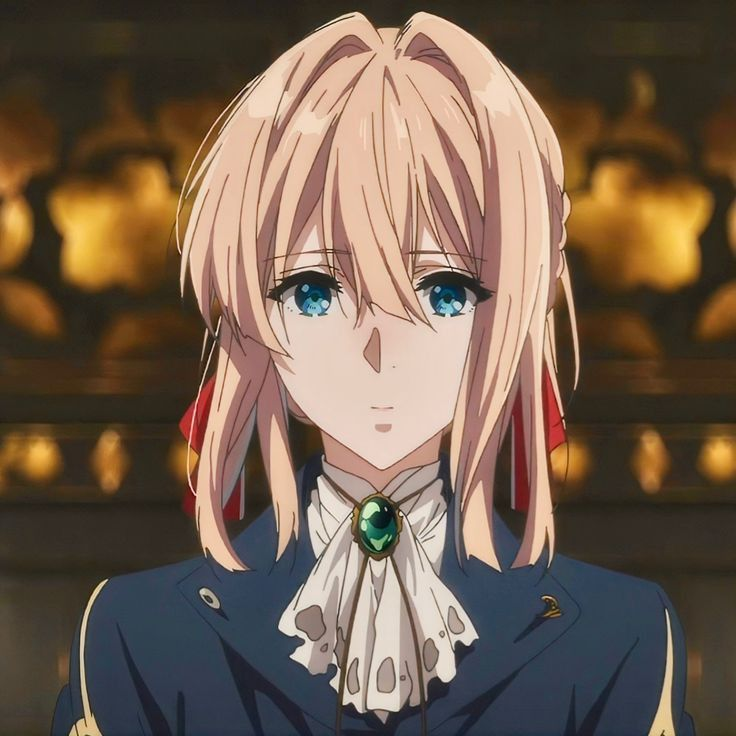
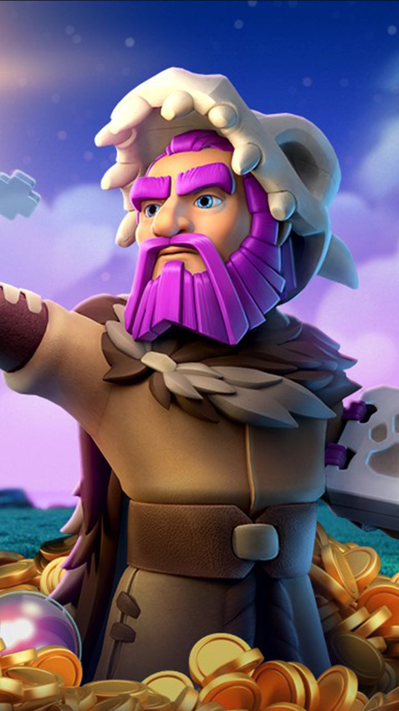
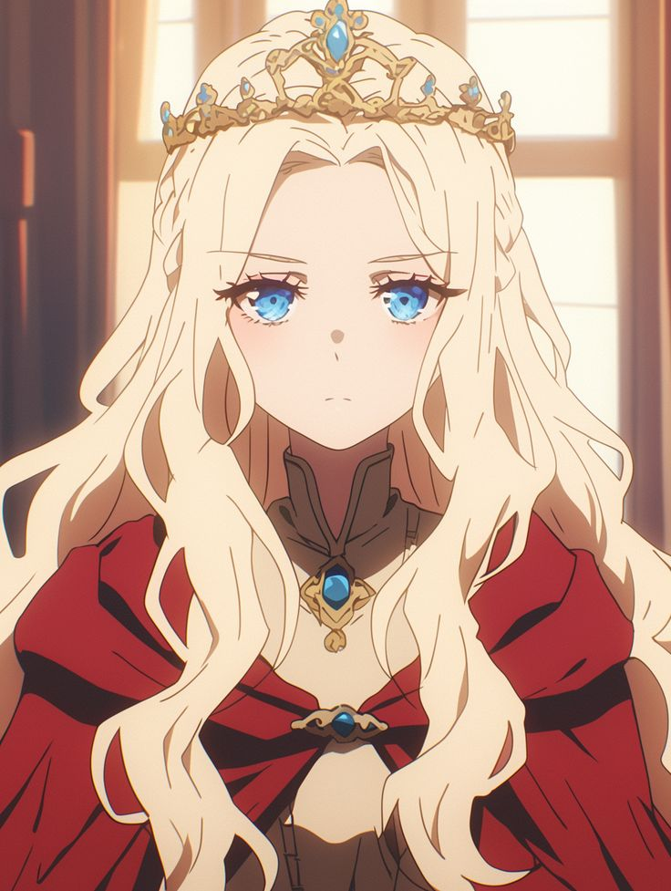

The History of Clash of BaNG
Clash of BaNG is a growing fan community website inspired by the world-famous Clash-style fantasy universe. Originally started as a small online forum back in 2018, Clash of BaNG has quickly expanded into a massive network supporting passionate strategy players worldwide.
The community provides a vast collection of high-quality content including comprehensive troop guides, hero strategies, fan art collections, and beginner-friendly tutorials. Our content specifically focuses on Dark Troops, which are the most beloved elements chosen by our community's founders.
Key Milestones
The Foundation: Established as a small online forum for players to discuss base building layouts and dark troop strategies.
Regional Expansion: Successfully expanded into three localized regional community hubs established across Jakarta, Bandung, and Sanur.
Going Global: Launching our new official web platform to centralize all guides, troop data, and clan registrations to reach global fans.
Meet the Founders
The strategic minds who brought the Clash of BaNG community to life to attract fans worldwide.

Chief Alexander
Lead Strategy DesignerA veteran Clash player who managed the original 2018 online forum and handles regional operations in Jakarta.

Grand Warden Budi
Content & Media CuratorThe artistic mind supervising the community fan art showcases and running the regional hub in Bandung.

Queen Nyoman
Technical Web DeveloperResponsible for managing database guides, centralizing clan activities, and leading the hub in Sanur.